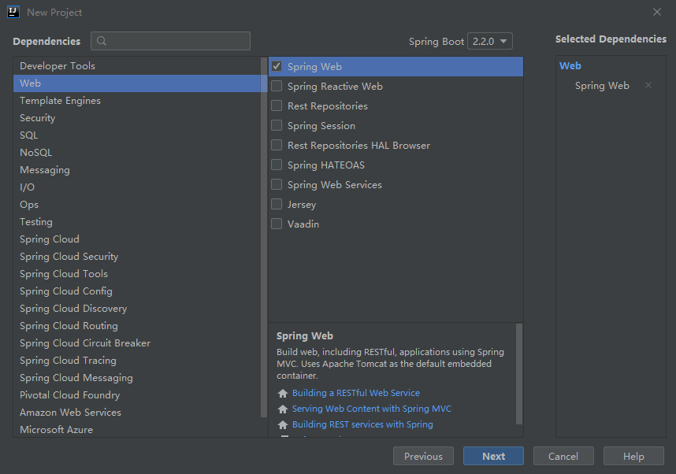

最近有一个项目用到了SpringBoot框架，这也是我第一次用这个框架，对于新手小白来说，不是怎么友好，但是一旦搭建好了，确实上手很快，不用管底层是怎么实现的，也不用问某些东西是干嘛的，问就是去百度。因为人家的规定的就是让那么写，咱就是个使用者，跟着写就对了。emmmmmmm，好了，不在这瞎白活了，下面进入正题，开始搭建一个SpringBoot项目。
SpringBoot项目搭建
1. SpringBoot
1.1 什么是SpringBoot
Spring Boot makes it easy to create stand-alone, production-grade Spring based Applications that you can “just run”.
We take an opinionated view of the Spring platform and third-party libraries so you can get started with minimum fuss. Most Spring Boot applications need very little Spring configuration.
这段话是摘自官网的介绍，大致意思就是使用SpringBoot可以轻松快速的创建独立的、生产级别的基于Spring的应用程序。
1.2 优势
SpringBoot对开发效率的提升是全方位的，在没有使用SpringBoot之前开发一个web项目需要做那些工作
- 配置web.xml，加载Spring和SpringMVC
- 配置数据库连接、配置Spring事务
- 配置加载配置文件的读取、开启注解
- 配置日志文件
- 部署tomcat调试
- ……
而且还要添加一大堆记不住名字的jar包，有可能还要考虑各个版本的兼容性、冲突性等各种可行性。是不是感觉很复杂？就这步骤还是使用SSM(Spring+SpringMVC+MyBatis)整合搭建的。不说以前的JavaBean+servlet+Jsp的模式，就拿SSH(Struts+Spring+Hibernate)来说比这还要复杂，各种xml搞的让人头大。这个时候再来看一下SpringBoot搭建项目，就简单明了的几个配置文件，而且大多还都是自动配置，而且内置的有tomcat，使用idea创建更是方便，idea内置的各种工具可以实现全部全部框架的自动生成。
突出优势：
简单、快速、方便的搭建项目
主流开发框架无配置集成
提高开发效率、部署效率
2. 项目搭建
2.1 开发环境
os:Windows 10
ide:IDEA 2019.2.3
jdk:1.8.0
maven:3.6.1
tomcat:9.0(框架自带)
2.2 创建项目
用idea新建项目时，选择左侧的Spring Initializr，这是idea提供的快速创建，然后点击next。
下一个页面是配置项目信息。Group是域；Artifact一般代表公司名称；这两个参数都是提供给Maven的；下面的Name和Package会自动补全，Package是项目总包名；Type一般都选择Mavne；Language一般选择Java，也可以使用其他虚拟机语言，比如Kotlin、Groovy；Packaging是项目打包方式，可以选择打成jar包或者war包。Java Version对于JDK选择8。配置完成之后点击next。
- 坐标Group ID是项目组织唯一的标识符，实际对应项目中的package包。
- 坐标Artifact ID是项目的唯一的标识符，实际对应项目的project name名称，Artifact不可包含大写字母。

接下来是Dependencies初始化依赖，此处勾选Web–>Spring Web。

选择项目路径。然后Finish。
因为项目是依托于Maven的，第一次加载时间较长，是因为所有的配置都需要在网络上请求下来，下载完毕后项目目录如下所示。
简单介绍一下目录，大致可以分成三块。
- java: 代码的源文件，逻辑代码都在这个里面存放着，里面的DemoApplication.java是系统的启动文件。
- resource: 资源文件夹，存放的是所有静态资源和配置文件。application.properties是主要配置文件，可以添加其他配置，不够我一般习惯将其改为application.yaml格式，这个看个人习惯。有一点就是static文件夹西下的静态文件可以直接通过url访问到。templates文件夹下的不能通过url访问，需要通过controller跳转进行访问。
- test: 测试模块。用于项目发布前的测试，里卖弄内置一个Junit测试。
在文件夹最外面有一个pom.xml文件，这个是引入外部依赖的文件。下面会说明。
2.3 测试运行
项目创建出来之后，先写个简单的controller进行测试一下。在之前的com.example.demo下新建一个controller文件夹，创建编写HelloWorldController类进行测试。
1 | package com.example.demo.controller; |
这里的controller还是和SpringMVC很像的，唯一不同的一点就是@RestController这个注解，他就相当于是@Controller和@ResponseBody这两个注解的合体版。将这个注解打在类上的话，那么这个controller类里的所有方法都等于打上了@ResponseBody。
然后就开始运行了，点击右上角的运行箭头或者直接启动DemoApplication.java类。
然后你就会看到控制台输出SpringBoot了。这个时候就意味着项目已经启动成功了，然后访问localhost:8080/hello.do
可以看到信息已经返回，测试成功。
3. 项目分析
3.1 pom.xml文件
在创建SpringBoot项目的时候会自动生成一个pom.xml文件。如下所示。
1 |
|
这个相比于一般的pom.xml文件多了一个<parent>标签，这个标签是配置在SpringBoot的父级依赖，有了这个，当前的项目才是SpringBoot项目，spring-boot-starter-parent是一个特殊的’starter’，它用来提供maven默认依赖，使用它之后常用的包依赖就可以省去version标签。
3.2 入口类
SpringBoot项目通常有一个名为*Applicaton的入口类，入口类里面就只有一个main方法，这个main方法其实就是一个标准的Java应用的入口方法。
@SpringBootApplication是SpringBoot的核心注解，它是一个组合注解，该注解组合了：@Configuration、@EnableAutoConfiguration、@ComponenScan。若不使用@SpringBootApplication注解也可以使用这三个注解代替。
@Configuration注解和它的搭档@Bean在一起使用就可以创建一个简单的Spring配置类，可以用来代替相应的xml配置文件。
@EnableAutoConfiguration让SpringBoot根据类路径中的jar包依赖为当前项目进行自动配置Spring的上下文。例如，添加了spring-boot-starter-web依赖，会自动添加Tomcat和SpringMVC的依赖，那么SpringBoot会对Tomcat和SpringMVC进行自动配置。
@ComponenScan会自动扫描指定包下的全部标有@Component的类，并注册成Bean，当然包括@Component下的子注解@Service、@Repository、@Controller。
SpringBoot还会自动扫描@SpringBootApplication所在类的同级包以及子包里的Bean，所以入口类建议就配置在grounpID+arctifactID组合的包名下(这里为com.example.demo包)，使用idea自动创建项目的话idea会自动在这里创建。如果其他包没有和入口启动类在同一级的话，需要配置包扫描注解，@EntityScan("xx.xx.entity"):扫描实体类包；@EnableJpaRepositories(basePackages = {"xx.xx.jpa"})：扫描jpa包；@ComponentScan(basePackages = {"xx.xx.controller", "xx.xx.service", "xx.xx.service.Impl"})：扫描controller包、service包和Impl包。
3.3 配置文件
SpringBoot使用一个全局配置文件application.properties，它的作用是对一些默认配置的配置进行修改，放置在src/main/resources目录或者类路径的/config下。
SpringBoot不仅支持常规的properties配置文件，还支持yaml语言的配置文件。yaml是以数据为中心的语言，在配置数据的时候具有面向对象的特征。
4. 使用SpringBoot
4.1 集成JSP
SpringBot默认视图支持是Thymeleaf模板引擎，但是现在掌握的还不是很深，所以还是先来看看怎么集成JSP吧。
1.在pom.xml文件中集成JSP，向pom.xlm添加以下依赖。
1 | <dependency> |
2.在application.yml文件中配置视图解析器，将我们的JSP文件重定向到/WEB-INF/views/目录下。
1 | spring: |
3.编写一个controller，注解要用@Controller,不能用@RestController注解，不然不能写jsp。
1 | package com.example.demo.controller; |
4.在src/main目录下一次创建’webapp/WEB-INF/views’目录，并创建一个hello.jsp文件。
1 | <%@ page language="java" contentType="text/html; charset=UTF-8" pageEncoding="UTF-8" %> |
最后在浏览器输入localhost:8080/hello2.do就可以看到以下效果了。
4.2 集成MyBatis
是不是看到这就已经可以自己使用SpringBoot和JSP开发一个静态网页呢？开不开心？不要激动，下面还有数据库没连接呢，接下来就来看看怎么集成MyBatis吧。
1.在pom.xml中添加对MySql和Mybatis的依赖。
1 | <!-- mybatis --> |
2.在application.yml配置文件添加配置。
1 | spring: |
3.先在com.example.demo下创建domain和mapper包，再创建User实体类和UserMapper映射类分别放在domain和mapper包下。
1 | package com.example.demo.domain; |
1 | package com.example.demo.mapper; |
4.然后在controller包下创建UserController类。
1 | package com.example.demo.controller; |
5.编写一个list.jsp文件，用来显示数据库中准备好的数据。
1 | <%@ page language="java" contentType="text/html; charset=UTF-8" |
6.在浏览器访问localhost:8080/userList.do即可看到数据库里数据。
以上就是使用SpringBoot搭建项目的全部内容，并且集成了JSP和MyBatis，按照上面的步骤一步一步的来，就可以搭建一个基于SpringBoot的web项目了。